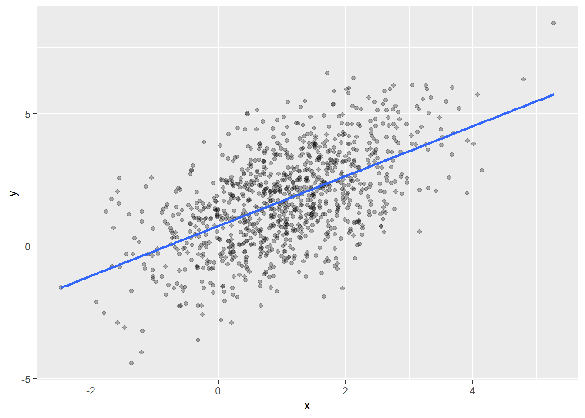

By iteration of Equation 2, we see that \(\eta_t\) has gaussian unconditional distribution:
\[
\eta_t \sim \mathcal N (0, \sigma ^2),\qquad \sigma^2 \equiv \frac{\sigma^2_0}{1-\alpha ^2}
\tag{3}\] so that individual observations of \((X_t,\,Y_t)\) are distributed according to a perfectly specified linear model.
This does not mean that, given observational data \(\{(X_t,\,Y_t)\}_{t = 1,\,2,\,\dots,\,T}\), we are allowed to make standard linear model assumptions to perform valid inference on the parameters \(\beta\) and \(\sigma\) of Equation 1 and Equation 3. Since the noise terms \(\eta _t\) are not independent draws from a single distribution, but are rather autocorrelated, the usual OLS variance estimate under linear model assumptions will be biased, as we show below 1.
It is fairly easy to work out the consequences of autocorrelation. Suppose, more generally, that the error term \(\eta _t\) is a stationary time series with unconditional mean \(\mathbb E(\eta_t)=0\) and unconditional variance \(\text{Var}(\eta _t)=\sigma ^2\). The OLS estimate of \(\beta\) is2:
which is unbiased since \(\mathbb E (\mathbf{η}) = 0\). The estimate of the noise variance \(\sigma ^2\), on the other hand:
\[
\begin{split}
\hat \sigma ^2 & = \frac{(\mathbf Y - \mathbf X\hat \beta)^T(\mathbf Y - \mathbf X\hat \beta)}{N-p}= \frac{\mathbf{η}^T(\mathbf 1-\mathbf H)\mathbf{η} }{N-p} \\
\mathbb E (\hat \sigma ^2) & = \dfrac{\text {Tr}\left[(\mathbf 1- \mathbb E(\mathbf H))\cdot \text {Cor}(\mathbf{η})\right]}{N-p}\sigma ^2
\end{split}
\] where \(\mathbf H = \mathbf X(\mathbf X^T\mathbf X)^{-1}\mathbf X^T\) as usual, and we have used the fact that \(\mathbb {V}( \mathbf{η} ) = \sigma ^2 \cdot \text {Cor}(\mathbf{η})\) (since each \(\eta_t\) has the same unconditional variance \(\sigma ^2\)). Hence the \(\hat \sigma ^2\) OLS estimate is biased if \(\text{Cor}(\mathbf{η})\neq \mathbf 1\).
Similarly, the variance-covariance matrix of the OLS \(\hat \beta\) estimator is:
\[
\mathbb V (\hat \beta) = \mathbb E\left[(\mathbf X^T\mathbf X)^{-1}\mathbf X^T\text {Cor}(\mathbf{η})\mathbf X (\mathbf X^T\mathbf X)^{-1} \right]\sigma^2
\] whereas its OLS estimate is:
\[
\hat {\mathbb V} (\hat \beta) = (\mathbf X^T\mathbf X)^{-1} \hat \sigma ^2
\] which is biased for \(\text{Cor}(\mathbf{η})\neq \mathbf 1\).
Even though the variance estimators are themselves biased, the biases could still vanish in the asymptotic limit. This is the case for \(\hat \sigma ^2\), as we can see by rewriting:
\[
\dfrac{\mathbb E (\hat \sigma ^2)}{\sigma ^2}-1 = -\dfrac{1}{{N-p}}\text {Tr}\left[\mathbb E(\mathbf H)^T\cdot(\text {Cor}(\mathbf{η})-\mathbf 1)\cdot \mathbb E(\mathbf H)\right]
\] where we have used the projector properties of \(\mathbf H\) to recast the trace in terms of a symmetric operator. In principle, nothing prevents the operator above to have \(O(N)\) eigenvalues, which would make the \(\hat \sigma ^2\) estimator asymptotically biased3. In realistic cases, one expects the correlations \(\text{Cor}(\eta_t,\eta_{t'})\) to decay exponentially with \(\vert t - t'\vert\)4 , in which case the trace is bounded to be of \(O(p)\), and \(\mathbb E(\hat \sigma ^2) \to \sigma ^2\) as \(N\to \infty\).
For \(\hat {\mathbb V} (\hat \beta)\) things are not so favorable. It is enough to consider a special case of a plain intercept term: \(X=1\). In this case, we find with some manipulations:
\[
\begin{split}
\mathbb V (\hat \beta) &= \frac{\sigma ^2}{N}\left(1+\frac{1}{N}\sum _{t\neq t'} \text{Cor}(\eta_t,\eta_{t'})\right),\\
\mathbb E(\hat {\mathbb V} (\hat \beta)) & = \frac{\sigma ^2}{N}\left(1-\frac{1}{N(N-1)}\sum _{t\neq t'} \text{Cor}(\eta_t,\eta_{t'})\right)
\end{split}
\] Since \(\sum _{t\neq t'}\text{Cor}(\eta_t,\eta_{t'})=O(N)\), we see that:
\[
\lim _{N\to \infty} \dfrac{\mathbb E(\hat {\mathbb V} (\hat \beta))}{\mathbb V(\hat \beta)}\neq 1
\] which amounts to say that \(\hat {\mathbb V} (\hat \beta)\) is asymptotically biased5.
Illustration
The (foldable) block below defines helpers to simulate the results of linear regression on data generated according to \(Y_t = f(X_t) + \eta _t\). These are the same functions used in my previous post on misspecification and sandwich estimators - slightly adapted to the current case.
Code
library(dplyr)library(ggplot2)rxy_fun <-function(rx, f, reps) { res <-function(n) { x <-rx(n) # X has marginal distribution 'rx' y <-f(x) +reps(x) # Y has conditional mean 'f(x)' and noise 'reps(x)'return(tibble(x = x, y = y)) }return(structure(res, class ="rxy"))}plot.rxy <-function(x, N =1000, seed =840) {set.seed(seed)ggplot(data =x(N), aes(x = x, y = y)) +geom_point(alpha =0.3) +geom_smooth(method ="lm", se =FALSE)}lmsim <-function(rxy, N =100, vcov = stats::vcov, B =1e3, seed =840) { set.seed(seed) res <-list(coef =matrix(nrow = B, ncol =2), vcov =vector("list", B),sigma2 =numeric(B) )colnames(res$coef) <-c("(Intercept)", "x")class(res) <-"lmsim"for (b in1:B) { .fit <-lm(y ~ ., data =rxy(N)) res$coef[b, ] <-coef(.fit) # Store intercept and slope in B x 2 matrix res$vcov[[b]] <-vcov(.fit) # Store vcov estimates in length B list. res$sigma2[[b]] <-sigma(.fit) ^2 }return(res)}print.lmsim <-function(x) {cat("Simulation results:\n\n")cat("* Model-trusting noise variance:\n ")print( mean(x$sigma2) )cat("* Model-trusting vcov of coefficient estimates:\n")print( avg_est_vcov <-Reduce("+", x$vcov) /length(x$vcov) )cat("\n* Simulation-based vcov of coefficient estimates:\n")print( emp_vcov <-cov(x$coef))cat("\n* Ratio (Model-trusting / Simulation):\n")print( avg_est_vcov / emp_vcov )return(invisible(x))}
We simulate linear regression on data generated according to:
\[
\begin{split}
Y_t &= 1 + X_t+\eta_t,\\
X_{t+1} &= 0.4 \cdot X_t+Z^X_t,\\
\eta _{t+1} &= \frac{1}{\sqrt 2}\eta _t +Z^\eta_t\\
\end{split}
\] where \(Z^{X,\eta}_t\sim \mathcal N(0,1)\). The noise \(\eta_t\) is \(\text{AR}(1)\), and results in the unconditional variance of the corresponding linear model \(\text{Var} (\eta _t) = 2\), twice the conditional variance \(\text{Var}(\eta _{t+1}\vert \eta _t)=\mathbb E(Z_t ^2)=1\).
rxy_01 <-rxy_fun(rx = \(n) 1+arima.sim(list(order =c(1,0,0), ar =0.4), n = n),f = \(x) 1+ x,reps = \(x) arima.sim(list(order =c(1,0,0), ar =1/sqrt(2)), n =length(x) ))plot(rxy_01)

From the simulation below, we see that with \(N=100\) serial observations, \(\mathbb E(\hat \sigma ^2)\) is relatively close to \(\sigma ^2 = 2\), but the \(\mathbb E(\hat {\mathbb V} (\hat \beta))\) grossly underestimates all entries (as can be seen from the last line of the output of lmsim() below).
lmsim(rxy_01, N =100)
Simulation results:
* Model-trusting noise variance:
[1] 1.870606
* Model-trusting vcov of coefficient estimates:
(Intercept) x
(Intercept) 0.03583159 -0.01663739
x -0.01663739 0.01659708
* Simulation-based vcov of coefficient estimates:
(Intercept) x
(Intercept) 0.15486131 -0.02665435
x -0.02665435 0.02978162
* Ratio (Model-trusting / Simulation):
(Intercept) x
(Intercept) 0.2313786 0.6241905
x 0.6241905 0.5572928
To correctly estimate \(\mathbb V (\hat \beta)\), we could try using the “autocorrelation-consistent” sandwich estimator sandwich::vcovHAC()6. It turns out that, even with a relatively simple example like the present one, the sample size required for the HAC estimator’s bias to die out is unreasonably large (see below). With such large samples, one can probably obtain much better results by leaving out some data for model building, performing inference on the remaining data with a proper time-series model.
lmsim(rxy_01, vcov = sandwich::vcovHAC, N =100)
Simulation results:
* Model-trusting noise variance:
[1] 1.870606
* Model-trusting vcov of coefficient estimates:
(Intercept) x
(Intercept) 0.08787795 -0.02323242
x -0.02323242 0.02339146
* Simulation-based vcov of coefficient estimates:
(Intercept) x
(Intercept) 0.15486131 -0.02665435
x -0.02665435 0.02978162
* Ratio (Model-trusting / Simulation):
(Intercept) x
(Intercept) 0.5674623 0.8716182
x 0.8716182 0.7854329
lmsim(rxy_01, vcov = sandwich::vcovHAC, N =500)
Simulation results:
* Model-trusting noise variance:
[1] 1.974131
* Model-trusting vcov of coefficient estimates:
(Intercept) x
(Intercept) 0.023032270 -0.005723968
x -0.005723968 0.005684149
* Simulation-based vcov of coefficient estimates:
(Intercept) x
(Intercept) 0.029600757 -0.005993161
x -0.005993161 0.006152216
* Ratio (Model-trusting / Simulation):
(Intercept) x
(Intercept) 0.7780973 0.9550834
x 0.9550834 0.9239189
lmsim(rxy_01, vcov = sandwich::vcovHAC, N =1000)
Simulation results:
* Model-trusting noise variance:
[1] 1.98033
* Model-trusting vcov of coefficient estimates:
(Intercept) x
(Intercept) 0.011878079 -0.002771484
x -0.002771484 0.002849089
* Simulation-based vcov of coefficient estimates:
(Intercept) x
(Intercept) 0.015085291 -0.002844716
x -0.002844716 0.002855522
* Ratio (Model-trusting / Simulation):
(Intercept) x
(Intercept) 0.7873948 0.9742566
x 0.9742566 0.9977471
Footnotes
For the linear model assumptions to hold, the \((X_t,\,Y_t)\) pairs should come from independent realizations of the same time series, which is of course not the type of data we are usually presented with.↩︎
As usual we stack observations vertically in the \(\mathbf X\) and \(\mathbf Y\) matrices.↩︎
For an extreme case, suppose that \(\mathbf X = \mathbf e\) (no covariate except for an intercept term), and let the noise term be \(\eta _t = Z_0 + Z_t\), where \(Z_0\) and \(\{Z_t\}_{t=1,2,\dots,T}\) are independent \(Z\)-scores. One can easily see that, in this setting, \(\text {Cor}(\eta) = \frac{1}{2}(\mathbf 1+\mathbf e \mathbf e^T )\) and \(\text{Tr}(\cdots) \approx \frac{N}{2}\).↩︎
For instance, for the \(\text{AR}(1)\) noise of Eq. Equation 2, we have \(\text{Cor}(\eta_t, \eta_{t'})= \alpha ^{\vert t - t'\vert}\).↩︎
The difference \(\mathbb E(\hat {\mathbb V} (\hat \beta))-\mathbb V(\hat \beta)\) decays as \(O(N^{-1})\), which is of the same order of the estimation target \(\mathbb V (\hat \beta)\). Not sure I’m using standard terminology here.↩︎
Disclaimer: I haven’t read any theory about the HAC estimator, so I may be misusing it here, but I would have expected it to work relatively well on such an “easy” example. For illustrations on how to use sandwich estimators for first- and second-order linear model misspecification, you can read this post of mine.↩︎
![]()